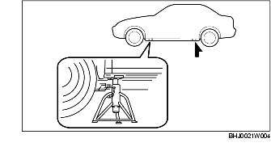

PLACERING AV DOMKRAFT, UPPHISSNING AV FORDON (2 LYFTPUNKTER) OCH PLACERING AV PALLBOCKAR
B3E000000007W01
Placering av domkraft
-
Varni ng
-
• Det är farligt att använda domkraften fel. Om domkraften placeras fel kan fordonet glida av och orsaka svåra skador. Domkraften får endast placeras i de främre och bakre lyftpunkterna. Blockera hjulen.
• Ställ pallbockar under fordonet efter det att det hissats upp på domkraften.
Fram
-
Observera
-
• Innan du sätter domkraften under fordonet ska några plankor (ca 20 mm {0,78 tum} tjocka) läggas under framdäcken så att stötfångaren inte slår emot domkraften.
-
• Mitt på främre tvärbalk.
Bak
-
Försiktigt
-
• Lägg en planka (ca 20 mm {0,78 tum} tjock) mellan bakre tvärbalk och domkraften för att förhindra att tvärbalken skadas.
-
• Mitt på bakre tvärbalk.
Fordonets lyftpunkter
Fram och bak
-
Varni ng
-
• Det är farligt att använda domkraften fel. Fordonet kan glida av lyftanordningen och orsaka svåra personskador och/eller skador på fordonet. Se till att fordonet står plant på lyftanordningen genom att justera höjden vid lyftanordningens armar.
Placering av pallbockar
Fram och bak
-
• Fordonets båda sidor, på sidotrösklar.
